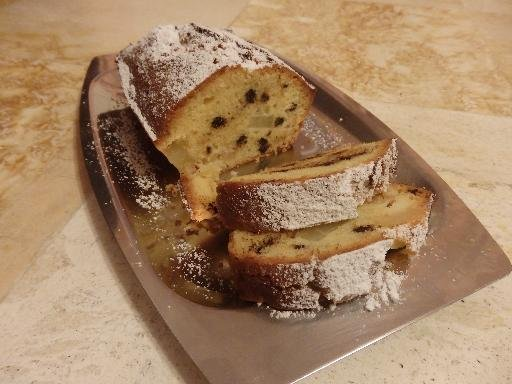

Cake poire chocolat amande
Ingredients
×
- 3 oeufs
- 100 g de sucre en poudre
- 150 g de farine
- 1 sachet de levure
- 150 g de beurre
- 50 g d'amande en poudre
- 1 grosse boîte de poires au sirop
- 100 g de pépites de chocolat noir

Préparation
Étape 1
Préchauffer le four à 180ºC.
Étape 2
Fouetter 3 oeufs et 100 g de sucre en poudre jusqu’à blanchiment. Ajouter en pluie 150 g de farine mélangée à 1 sachet de levure, puis 150 g de beurre fondu et 50 g d'amande en poudre.
Étape 3
Couper en petits dés 1 grosse boîte de poires au sirop égouttées et les mélanger à la pâte avec 100 g de pépites de chocolat noir.
Étape 4
Verser dans un moule à cake beurré et fariné et cuire 40min.